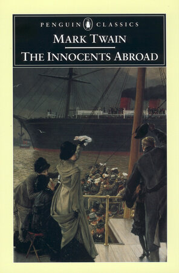
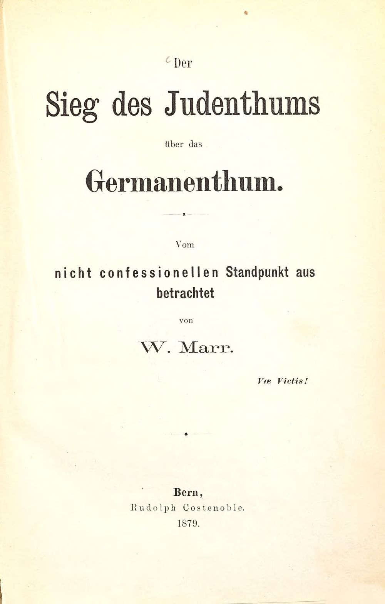
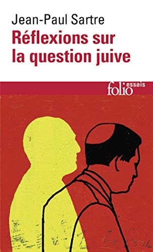

17:21 · 6 OPERE
Propaganda e manipolazione del linguaggio.
Il filo del discorso
Dr Divago discute il rapporto fra propaganda e trasformazione del significato delle parole, organizzando il commento intorno a genocidio, apartheid e antisemitismo. I riferimenti a Muravchik e Landes introducono la tesi di una rappresentazione ostile di Israele; il resoconto di viaggio di Twain entra nel ragionamento sull’identità palestinese. La parte centrale confronta termini storici e impieghi contemporanei, anche attraverso un articolo ricordato dal relatore. Il finale richiama Marr e Sartre per legare l’uso del linguaggio alla disponibilità ad ascoltare ragioni ed esperienze diverse dalle proprie convinzioni.
I libri nel discorso

Vangelo secondo Matteo
Note sul riferimento
Copertina del volume completo: San Paolo, 2014 · Nuova Versione dai Testi Antichi · edizione di riferimento
Vangelo secondo Matteo è un libro della Bibbia. L’immagine mostra il volume completo San Paolo di riferimento, non un’edizione autonoma del singolo libro e non una versione identificata nella citazione.
È indicato Matteo 23,28 nel passo sui sepolcri imbiancati.

Making David into Goliath. How the World Turned Against Israel
Note sul riferimento
Copertina: Encounter Books · 2014 · inglese · edizione rilegata
Immagine autentica dell’opera, controllata visivamente; non identifica l’edizione usata nel video.
Joshua Muravchik e Making David into Goliath sono nominati.
Can “The Whole World” Be Wrong? Lethal Journalism, Antisemitism, and Global Jihad
Note sul riferimento
Copertina: Academic Studies Press · Antisemitism in America · 2022 · inglese
Immagine autentica dell’opera, controllata visivamente; non identifica l’edizione usata nel video.
Richard Landes e Can the Whole World Be Wrong sono nominati nel richiamo al lethal journalism.

The Innocents Abroad
Note sul riferimento
Copertina: Penguin Classics · 2002 · inglese
Immagine autentica dell’opera, controllata visivamente; non identifica l’edizione usata nel video.
The Innocents Abroad di Mark Twain è nominato a proposito del viaggio del 1867.

Der Sieg des Judenthums über das Germanenthum
Note sul riferimento
Frontespizio: Frontespizio · Rudolph Costenoble · Berna · 1879 · tedesco
Frontespizio autentico dell’esemplare digitalizzato dalla Bayerische Staatsbibliothek, quinta immagine della sequenza. La legatura storica è stata esaminata separatamente; non viene presentata come copertina editoriale illustrata. Riproduzione documentaria di un opuscolo antisemita ottocentesco, senza adesione ai contenuti.
È richiamato il testo di Marr del 1879 attraverso la resa descrittiva del titolo in italiano.

Réflexions sur la question juive
Identificazione probabile
Note sul riferimento
Copertina: Gallimard · Folio essais 10 · 1985 · francese
Immagine autentica dell’opera, controllata visivamente; non identifica l’edizione usata nel video.
Il saggio di Sartre sull’antisemitismo e il passo sulla scelta di non ascoltare richiamano probabilmente Réflexions sur la question juive; titolo non pronunciato.